Exploring NoSQL and the Bible
Keller Davis - BibleTech 2013
About me
- Seattleite
- Husband
- Own a dog
- Senior web developer for Bible Gateway
- Past year worked on NoSQL
Exploring NoSQL and the Bible
- About NoSQL
- My experiences
- Questions/discussion
Relational Databases vs NoSQL
Relational Databases
- We know and love them
- Robust
- Consistent and durable
- Tried and true
- Battle hardened
NoSQL Databases
- Non-relational databases or NoSQL
- Vary in design and principle quite a bit
- Trendy
- Used for "Big Data"
NoSQL

Some popular and very different NoSQL databases.
Scaling Systems
Vertical (scaling up) VS Horizontal (scaling out)
ACID
- Atomicity - Each transaction is all or nothing
- Consistency - After transaction, the system always sees the same data
- Isolation - Transactions don't affect each other
- Durability - Once a transaction is committed, data will remain, even on failures
CAP Theorem
Eric Brewer - You can have at most two of these properties for any shared-data system
- Consistency - The system always sees the same data, regardless of inserts, updates, and deletes
- Availability - Requests to non-failing node returns a response
- Partition tolerance - The system can be divided into nodes
Example
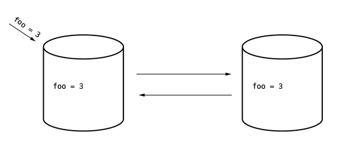 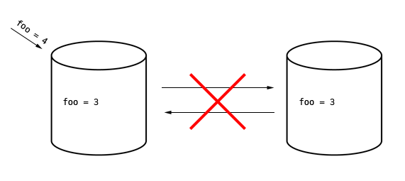Building a Scalable System
- CAP applies to both relational databases and NoSQL
- NoSQL can be either CP or AP (or even CA)
- Historically speaking, relational databases have been focused on ACID principles
- NoSQL often focuses on the P (scaling) in CAP and helps with with the lack or C or A
Why We Chose NoSQL
NoSQL solves many problems...
- Scaling and performance
- High Availability
- Eventually Consistent
- Schema-less
...but introduces new problems.
Bible Gateway's NoSQL Project
We wanted a new data store to attach data to Bible references. Could be any type of data...
- User annotations
- User history
- Extrabiblical works
- Analytics
- Other...
How Key-Value Store Work
NoSQL is a fancy key-value database
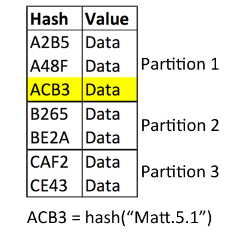No range queries!
(Get all items for Matt.5.1-Matt.5.48)
How (Many) NoSQL Databases Work
Most allow range queries
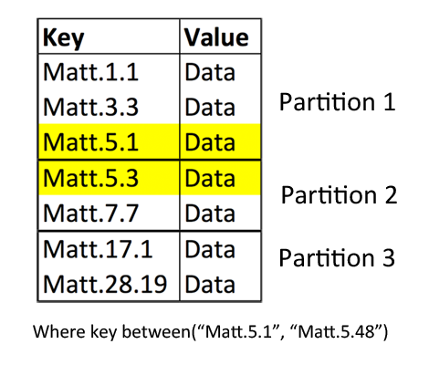Only single index queries!
Our Data
Data has multi-dimensional indexes
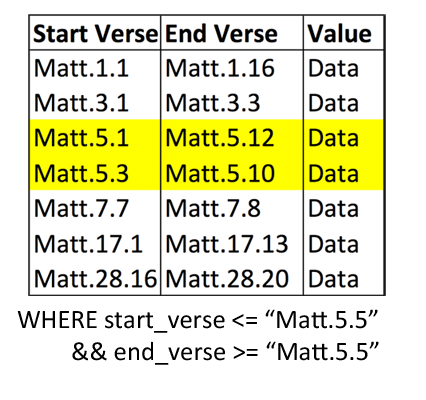Solution 1
Combine the keys into a single key and use math to query
- Couldn't get math to work
- Not a unique problem, geospatial data
- Nobody was solving it this way
Solution 2
Group all items by user/resource and filter out undesired items
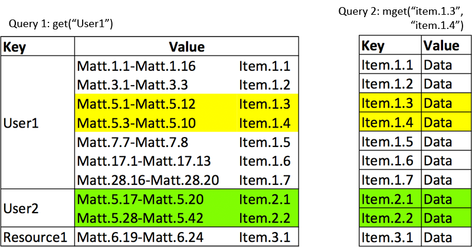Solution 2
Group all items by user/resource and filter out undesired items
- Many NoSQL can easily append/remove data to the value
- Gets around range queries and multi-dimensional indexing
- Potentially problematic if user/resource has lots of items
- Penalizing power users
Solution 3
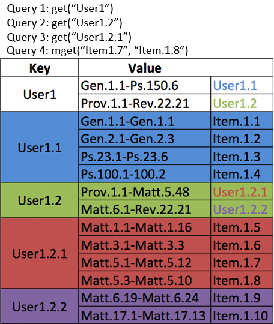Solution 3
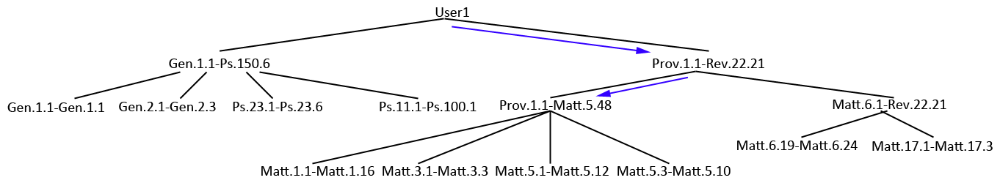Solution 3
Partition the data
- Creates a tree structure
- As data grows, searching for it is manageable
- Doesn't penalize too much for heavy usage
- Searching through less data VS more requests
- Probably have to rebalance tree
- Too complex
Solution 4
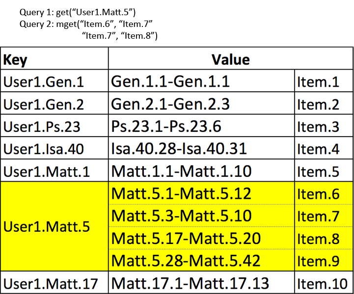Solution 4
Bible has built-in partitions
- Much simpler
- If always returning single chapters, don't have to filter
- Multi-index and range queries are non-issues
- No penalization for power users
- Winner!
Other Complexities
Secondary indexes
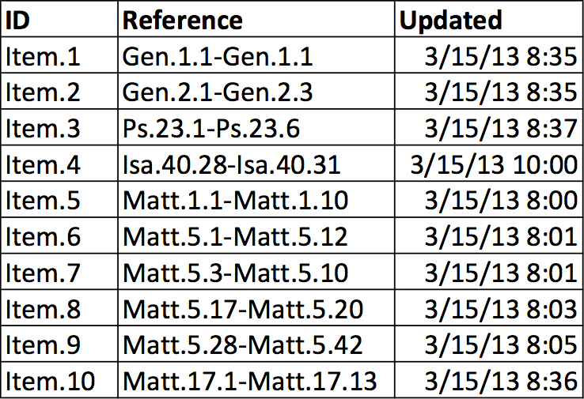Other Complexities
Secondary indexes
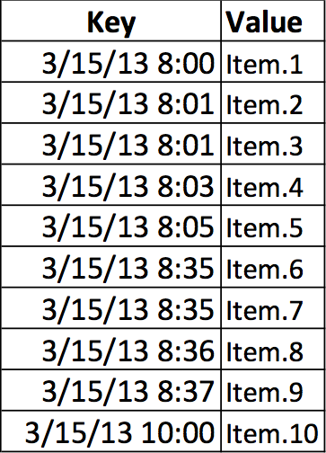